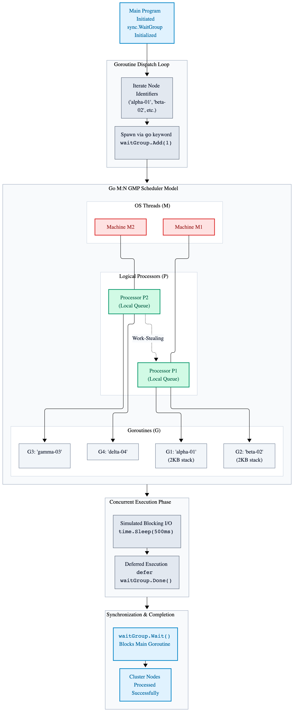

Concurrent Telemetry Processing
Welcome to Chapter 4 of the Go Systems Blueprint. In previous chapters, we covered syntax primitives, memory models, heap/stack escape analysis, and explicit error handling. We now enter Go's defining domain: concurrency.
Go was engineered from the ground up for modern multicore cloud infrastructure. Unlike languages that map concurrency directly to heavy OS threads, Go implements the CSP (Communicating Sequential Processes) model, famously summarized by the Go proverb: "Do not communicate by sharing memory; instead, share memory by communicating."
In this chapter, we dissect goroutines, the M:N work-stealing scheduler, channel semantics, non-blocking multiplexing, and low-level synchronization primitives.
4.1 Goroutines and the M:N Scheduler
A goroutine is a lightweight thread of execution managed directly by the Go runtime, not the operating system kernel.
- Minimal Memory Overhead: Goroutines start with an initial stack allocation of only 2KB (compared to 1-2MB for OS threads). Stacks grow and shrink dynamically as needed.
- The M:N Work-Stealing Scheduler: The Go runtime uses the G-M-P model to multiplex thousands of goroutines (G) across a pool of OS threads (M) controlled by logical processors (P, typically matching CPU cores):
- G (Goroutine): Represents the unit of concurrent execution and its current stack/instruction pointer.
- M (Machine): Represents an OS thread managed by the kernel scheduler.
- P (Processor): Represents a logical resource required to execute Go code (running queue of goroutines).
- Work-Stealing: If an OS thread finishes its local queue of goroutines, it steals work from other processor queues to maximize CPU core utilization.
package main
import (
"errors"
"fmt"
"runtime"
"sync"
"time"
)
func ProcessTelemetryNode(clusterId string, waitGroup *sync.WaitGroup) error {
if clusterId == "" {
return errors.New("error: cluster node identifier cannot be empty")
}
if waitGroup == nil {
return errors.New("error: task wait group reference cannot be nil")
}
// Ensure the WaitGroup counter decrements when this goroutine exits.
defer waitGroup.Done()
fmt.Printf("[Node %s] Telemetry ingestion started on OS thread.\n", clusterId)
// Simulate blocking I/O work.
time.Sleep(500 * time.Millisecond)
fmt.Printf("[Node %s] Telemetry ingestion complete.\n", clusterId)
return nil
}
func main() {
fmt.Printf("Logical CPU cores available: %d\n", runtime.NumCPU())
var waitGroup sync.WaitGroup
nodeIds := []string{"alpha-01", "beta-02", "gamma-03", "delta-04"}
for _, clusterId := range nodeIds {
waitGroup.Add(1)
// Launch a concurrent goroutine using the go keyword.
go func(nodeIdentifier string) {
err := ProcessTelemetryNode(nodeIdentifier, &waitGroup)
if err != nil {
fmt.Printf("Failed to process telemetry node: %v\n", err)
}
}(clusterId)
}
// Block main execution until all spawned goroutines complete their work.
waitGroup.Wait()
fmt.Println("All cluster nodes processed successfully.")
}Figure 4.1: Go M:N Scheduler Architecture (GMP Model)

4.2 Channels (Unbuffered versus Buffered)
Channels provide a typed conduit through which you can send and receive values with concurrent coroutines.
- Unbuffered Channels (
make(chan T)): Zero capacity. Sends block until a receiver is ready to take the data, providing strict synchronization (rendezvous point). - Buffered Channels (
make(chan T, capacity)): Holds a fixed number of elements. Sends block only when the buffer is full; receives block only when the buffer is empty.
package main
import (
"context"
"errors"
"fmt"
"time"
)
// TelemetryPacket represents a single unit of telemetry data collected by the pipeline.
type TelemetryPacket struct {
Timestamp time.Time
Payload string
}
// StreamIngestionPipeline processes and streams telemetry packets into the provided send-only channel.
func StreamIngestionPipeline(parentContext context.Context, telemetryPacketChannel chan<- TelemetryPacket) error {
// Defensively check if the parent context is nil to prevent runtime panics.
if parentContext == nil {
return errors.New("parent context cannot be nil")
}
// Defensively check if the channel is nil to prevent blocking indefinitely or panics.
if telemetryPacketChannel == nil {
return errors.New("telemetry packet channel cannot be nil")
}
// Simulate streaming telemetry packets in a controlled loop.
for index := 0; index < 5; index++ {
// Respect parent context cancellation before attempting to generate data.
select {
case <-parentContext.Done():
return parentContext.Err()
default:
}
// Construct a telemetry packet with unique, descriptive properties.
packet := TelemetryPacket{
Timestamp: time.Now(),
Payload: fmt.Sprintf("telemetry-packet-payload-%d", index),
}
// Send the packet into the send-only channel with context awareness to avoid permanent blocking.
select {
case <-parentContext.Done():
return parentContext.Err()
case telemetryPacketChannel <- packet:
// Packet was successfully sent into the pipeline channel.
time.Sleep(500 * time.Millisecond)
}
}
return nil
}
4.3 select Statements & Non-Blocking Multiplexing
The select statement enables a goroutine to wait on multiple channel operations simultaneously,
resembling a switch statement tailored specifically for channel communications.
- Non-Blocking Operations: By pairing
selectwith adefaultcase, you can attempt to send or receive on a channel without blocking execution if the channel is unready. - Timeouts: Easily implement hard timeouts using
time.After().
package main
import (
"errors"
"fmt"
"time"
)
// QueryDatabaseCluster simulates querying a specific database node with variable latency.
func QueryDatabaseCluster(databaseEndpoint string, acknowledgmentStreamChannel chan<- string) error {
if databaseEndpoint == "" {
return errors.New("error: database node endpoint cannot be empty")
}
if acknowledgmentStreamChannel == nil {
return errors.New("error: acknowledgment stream channel cannot be nil")
}
// Initialize the baseline propagation delay for standard node operations.
propagationDelay := 100 * time.Millisecond
// Inject simulated replication lag if targeting a slow replica shard.
if databaseEndpoint == "shard-replica-lagging" {
propagationDelay = 800 * time.Millisecond
}
// Simulate blocking network transmission and query execution overhead.
time.Sleep(propagationDelay)
// Push the formatted node acknowledgment back through the output stream.
acknowledgmentStreamChannel <- fmt.Sprintf("Acknowledgment from %s", databaseEndpoint)
return nil
}
func main() {
// Instantiate buffered communication channels for each concurrent cluster target.
edgeNodeChannel := make(chan string, 1)
archivalNodeChannel := make(chan string, 1)
// Launch concurrent query routines against the primary and archival nodes.
go func() {
err := QueryDatabaseCluster("shard-primary-us-east", edgeNodeChannel)
if err != nil {
fmt.Printf("Primary query error: %v\n", err)
}
}()
go func() {
err := QueryDatabaseCluster("shard-replica-lagging", archivalNodeChannel)
if err != nil {
fmt.Printf("Archival query error: %v\n", err)
}
}()
// Multiplex channel responses using a select statement to enforce a strict SLA timeout.
select {
case streamResult := <-edgeNodeChannel:
// Handle successful response from the primary edge node.
fmt.Printf("Primary Shard Success: %s\n", streamResult)
case streamResult := <-archivalNodeChannel:
// Handle successful response from the archival replica node.
fmt.Printf("Archival Replica Success: %s\n", streamResult)
case <-time.After(300 * time.Millisecond):
// Trigger fallback logic if response latency breaches the 300ms SLA threshold.
fmt.Println("CRITICAL TIMEOUT: Database cluster response exceeded SLA limit.")
}
}
4.4 Synchronization Primitives (sync Package)
While channels excel at passing data ownership between goroutines, low-level synchronization primitives
from the sync package manage shared state and memory protection.
sync.WaitGroup: Blocks execution until a designated counter drops to zero.sync.Mutexandsync.RWMutex: Mutual exclusion locks. Mutex grants exclusive access, while RWMutex allows multiple concurrent readers or a single exclusive writer.sync/atomic: Hardware-level atomic operations for lock-free counter updates.
package main
import (
"errors"
"fmt"
"sync"
"sync/atomic"
)
// Aggregator manages thread-safe metric counts using both mutexes and atomic operations.
type Aggregator struct {
lock sync.Mutex
mutexCount int64
atomicCount int64
}
// Increment safely increments both the mutex-protected and atomic metric counters concurrently.
func (aggregator *Aggregator) Increment(waitGroup *sync.WaitGroup) error {
if aggregator == nil {
return errors.New("error: aggregatorregator instance cannot be nil")
}
if waitGroup == nil {
return errors.New("error: wait waitGroup reference cannot be nil")
}
// Ensure the wait waitGroup counter decrements when this worker finishes execution.
defer waitGroup.Done()
// Acquire the mutex lock to safely protect the critical section and increment the counter.
aggregator.lock.Lock()
aggregator.mutexCount++
aggregator.lock.Unlock()
// Perform a hardware-level lock-free atomic increment on the concurrent counter.
atomic.AddInt64(&aggregator.atomicCount, 1)
return nil
}4.5 Context Propagation and Cancellation
In distributed systems, operations often span multiple goroutines and network boundaries. If a request exceeds its deadline, continuing to process background work wastes compute resources.
Go solves this via the context package, which carries deadlines, cancellation signals,
and request-scoped values across API boundaries.
package main
import (
"context"
"errors"
"fmt"
"time"
)
// ExecuteRemoteTelemetryQuery simulates fetching remote data with a simulated delay and context cancellation support.
func ExecuteRemoteTelemetryQuery(executionRequestContext context.Context, remoteQueryIdentifier string, queryResultChannel chan<- string) error {
if executionRequestContext == nil {
return errors.New("error: execution request context cannot be nil")
}
if remoteQueryIdentifier == "" {
return errors.New("error: remote query identifier cannot be empty")
}
if queryResultChannel == nil {
return errors.New("error: query result channel cannot be nil")
}
// Define the simulated network processing duration.
processingDuration := 600 * time.Millisecond
// Initialize a timer to simulate background processing latency.
simulationTimer := time.NewTimer(processingDuration)
defer simulationTimer.Stop()
// Multiplex between context cancellation and query completion.
select {
case <-executionRequestContext.Done():
// Handle context cancellation or deadline expiration.
fmt.Printf("[Query %s] Aborted: %v\n", remoteQueryIdentifier, executionRequestContext.Err())
return executionRequestContext.Err()
case <-simulationTimer.C:
// Send the simulated data bundle back through the result channel.
queryResultChannel <- fmt.Sprintf("Data bundle for query %s", remoteQueryIdentifier)
}
return nil
}
func main() {
// Create a root context with a strict 300ms timeout to enforce an SLA limit.
rootContext, cancelContext := context.WithTimeout(context.Background(), 300*time.Millisecond)
// Ensure the cancel function is called to release resources when main exits.
defer cancelContext()
// Instantiate a buffered channel to receive the remote query result.
queryResultChannel := make(chan string, 1)
// Launch the remote telemetry query in a background goroutine.
go func() {
err := ExecuteRemoteTelemetryQuery(rootContext, "q-9901", queryResultChannel)
if err != nil && !errors.Is(err, context.DeadlineExceeded) && !errors.Is(err, context.Canceled) {
fmt.Printf("Remote telemetry query error: %v\n", err)
}
}()
// Multiplex between receiving the query result and hitting the context timeout.
select {
case queryResult := <-queryResultChannel:
// Handle successful data retrieval within the SLA window.
fmt.Printf("Success: %s\n", queryResult)
case <-rootContext.Done():
// Check if the request failed due to a deadline breach.
if errors.Is(rootContext.Err(), context.DeadlineExceeded) {
fmt.Println("Client Error: Request exceeded SLA deadline limit.")
}
}
}4.6 Goroutine Leaks and Race Detection
A goroutine leak occurs when a goroutine sits blocked indefinitely on a channel or synchronization primitive, retaining its stack memory for the application's lifetime.
Always ensure worker goroutines have explicit cancellation paths, and use Go's built-in race detector to catch memory corruption during testing:
$ go test -race ./...package main
import (
"errors"
"fmt"
"runtime"
"time"
)
// Worker simulates an efficient background process that reacts cleanly to shutdown signals.
func Worker(shutdownControlChannel <-chan struct{}) error {
if shutdownControlChannel == nil {
return errors.New("error: shutdown control channel cannot be nil")
}
// Initialize a ticker to drive periodic work without CPU-wasting polling loops.
taskTicker := time.NewTicker(100 * time.Millisecond)
defer taskTicker.Stop()
for {
// Multiplex efficiently between the shutdown signal and periodic task execution.
select {
case <-shutdownControlChannel:
// Handle the shutdown signal and exit the worker goroutine cleanly.
fmt.Println("Worker received shutdown signal. Exiting.")
return nil
case <-taskTicker.C:
// Simulate periodic background task processing when a tick occurs.
// Perform background operations here efficiently without polling.
}
}
}
func main() {
// Instantiate an unbuffered control channel used to broadcast shutdown signals.
shutdownControlChannel := make(chan struct{})
// Launch the worker goroutine in the background.
go func() {
err := Worker(shutdownControlChannel)
if err != nil {
fmt.Printf("Worker error: %v\n", err)
}
}()
// Allow the background worker to run briefly.
time.Sleep(250 * time.Millisecond)
// Print the active goroutine count before initiating worker shutdown.
fmt.Printf("Goroutines active before shutdown: %d\n", runtime.NumGoroutine())
// Close the control channel to broadcast the shutdown signal to the worker.
close(shutdownControlChannel)
// Allow a brief moment for the worker goroutine to terminate and clean up.
time.Sleep(50 * time.Millisecond)
// Print the active goroutine count after shutdown to confirm no leaks occurred.
fmt.Printf("Goroutines active after shutdown: %d\n", runtime.NumGoroutine())
}
4.7 High-Performance Memory Pooling (sync.Pool)
In high-throughput concurrent systems, allocating temporary buffers for every incoming request
places heavy pressure on the garbage collector. sync.Pool provides a concurrent-safe
object-recycling cache to minimize heap allocations.
package main
import (
"bytes"
"errors"
"fmt"
"sync"
)
// memoryBufferPool provides a concurrent-safe cache for byte buffers to minimize heap allocations.
var memoryBufferPool = sync.Pool{
New: func() interface{} {
// Allocate a new byte buffer if the pool is currently empty.
return new(bytes.Buffer)
},
}
// ProcessTelemetryPayload retrieves a recycled buffer from the pool, formats the data, and returns the result.
func ProcessTelemetryPayload(rawTelemetryPayload string) (string, error) {
if rawTelemetryPayload == "" {
return "", errors.New("error: raw telemetry payload cannot be empty")
}
// Retrieve a reusable byte buffer from the pool.
pooledInterfaceInstance := memoryBufferPool.Get()
recycledByteBuffer, typeAssertionSuccessful := pooledInterfaceInstance.(*bytes.Buffer)
if !typeAssertionSuccessful {
return "", errors.New("error: failed to type assert pool instance to byte buffer")
}
// Reset the buffer to clear any residual data from previous use.
recycledByteBuffer.Reset()
// Ensure the buffer is returned to the pool when function execution completes.
defer memoryBufferPool.Put(recycledByteBuffer)
// Write the prefix and telemetry payload into the recycled buffer.
_, writeHeaderError := recycledByteBuffer.WriteString("[Processed] ")
if writeHeaderError != nil {
return "", fmt.Errorf("error writing header prefix: %w", writeHeaderError)
}
_, writePayloadError := recycledByteBuffer.WriteString(rawTelemetryPayload)
if writePayloadError != nil {
return "", fmt.Errorf("error writing telemetry payload: %w", writePayloadError)
}
// Return the finalized string representation of the buffer contents.
return recycledByteBuffer.String(), nil
}
func main() {
// Define a collection of sample telemetry payload strings for processing.
telemetryPayloads := []string{"sensor-stream-alpha", "sensor-stream-beta", "sensor-stream-gamma"}
// Iterate through each telemetry payload and process it using the memory pool.
for _, telemetryPayload := range telemetryPayloads {
processedResult, processingError := ProcessTelemetryPayload(telemetryPayload)
if processingError != nil {
fmt.Printf("Telemetry processing error: %v\n", processingError)
continue
}
fmt.Println(processedResult)
}
fmt.Println("All telemetry payloads successfully processed using the memory pool.")
}Key Takeaways
- G-M-P Scheduler: Go achieves high-performance concurrency by multiplexing lightweight goroutines (G) with tiny 2KB starting stacks across OS threads (M) and logical processors (P) using a dynamic work-stealing engine.
- CSP Principles: Adhere to the core Go proverb—"Do not communicate by sharing memory; instead, share memory by communicating," using typed channels as conduits for safe data handoffs.
- Buffered vs. Unbuffered Channels: Unbuffered channels enforce strict rendezvous synchronization, whereas buffered channels introduce bounded elasticity to decouple producer-consumer throughput rates.
-
Multiplexing with
select: Use theselectstatement to coordinate multiple channel operations concurrently, pair withtime.Afterto enforce strict SLAs, and utilize default clauses for non-blocking probes. -
Granular Synchronization: Leverage
sync.WaitGroupfor lifecycle coordination,sync.Mutexfor protecting critical state sections, andsync/atomicfor low-level lock-free counters. -
Context-Driven Cancellations: Pass
context.Contextdown call stacks to propagate cancellation signals, prevent abandoned work, and enforce hard timeouts across distributed operations. -
Lifecycle Governance & Diagnostics: Guard against silent goroutine leaks caused by blocked channels,
and always integrate Go's built-in race detector (
go test -race) into your testing pipelines. -
Transient Allocation Pooling: Utilize
sync.Poolto recycle temporary heap allocations and significantly mitigate garbage collection pause pressure in high-throughput loops.